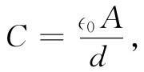
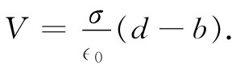
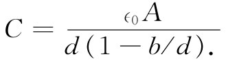

这里，我们开始讨论在电场的影响下物质的另一种特殊性质。上一章我们曾考虑过导体 的行为，其中电荷为了响应电场而自由地移至这样的点上，使得在导体内部不再残留电场。现在我们将讨论绝缘体 ，即那种不能导电的材料。也许人们起初会认为不应该有任何效应。然而，利用一个简单验电器和一个平行板电容器，法拉第就发现事实并非如此。他的实验表明，在这个电容器的两板间塞进一块绝缘体时，其电容会增加 。若绝缘体完全充满两板的间隙，电容会增大κ倍，而κ的大小仅取决于该绝缘材料的性质。绝缘材料也称作电介质 。这样，该因子κ就代表电介质的一种特性，因而被称为介电常量 。当然，真空的介电常量为1。
现在我们的问题在于解释：如果绝缘体确实是绝缘的而不能导电，那为什么还会有某种电效应呢？我们从电容增大这一实验事实出发，试找出可能的原因。考虑一个平行板电容器，在其两导体表面上带有一些电荷，让我们假定顶板带着负电而底板带着正电，两板的间距为d，而每块板的面积为A。正如以前我们曾经证明过的，这样一个电容器的电容为
 （10.1）
而在其上面的电荷与电压的关系为
Q=CV. （10.2）
现在有这样的实验事实：若把一块留西特（一种人造荧光树脂）玻璃那样的绝缘材料塞进极板之间，则我们会发现电容增大了。当然，这意味着，对于相同的电荷来说电压则是降低了。可是电压或电势差等于电场经过电容器的积分，因而我们必然得出结论，即使两板上的电荷保持不变，电容器里的电场还是会减弱的。
怎么会这样呢？有一个由高斯创立的定律告诉我们，电场通量正比于所包围的电荷。考虑图10-1那个由虚线表示的高斯面S。由于有电介质存在时电场被削弱，所以我们断定，在该面内的净电荷应少于没有该材料时的净电荷。只有一个可能的结论，那就是在电介质表面上必然存在正电荷。由于场虽被削弱了，但不是降低至零，所以我们应期待这正电荷仍比在导体表面上的负电荷少。因此，只要能够以某种方式理解，当介电材料被置于电场中时会有正电荷感生于其一面而负电荷感生于另一面，这一现象便可以得到解释。
图10-1 含有电介质的一个平行板电容器。图中表示出E线
我们会预料，对于导体来说，这同一现象也会发生。比方，假设有一个板间距为d的电容器，而我们将一块厚度为b的电中性导体放进两板之间，如图10-2所示。电场在顶面会感生正电荷，而在底面感生负电荷，因而在导体内部就没有电场了。但在其他空间里的场，则和未放进该导体时一样，因为它等于面电荷密度除以∈0 。可是，为了获得电压（电势差）得进行积分，此时所取的距离却已经缩短了。该电压为

关于电容的最终公式与式（10.1）相似，即
 （10.3）
只要用（d-b）来代替d罢了。
图10-2 若把一块导电板放进一个平行板电容器的空隙里，那些感生电荷就会使导体内之场减少至零
电容按一定因子增大，而这个因子取决于（b/d），即被导体所占的体积与原来空间体积的比例。
上述实验结果为我们提供了一个关于电介质到底是怎么回事的形象化模型——在材料内部有许多会导电的小片。这么一个模型的困难在于它具有某一特定轴，即那些片的法线，而大多数电介质却没有这么一种轴。然而，若我们假定所有介电材料都含有彼此绝缘分开的小导电球体，如图10-3所示的那样，这一困难则可以消除的。介电常量现象可以通过感生于每个球上的电荷的效应来加以解释。这是用来解释被观察到的法拉第现象的最早有关电介质的物理模型之一。更具体地说，曾经假定材料里每一原子是一个理想导体，但彼此互相绝缘。介电常量κ应该取决于这些导电小球体所占空间的比例。然而，这并不是目前常用的模型。
图10-3 关于电介质的一个模型。小导电球体被埋在一块理想绝缘体之中